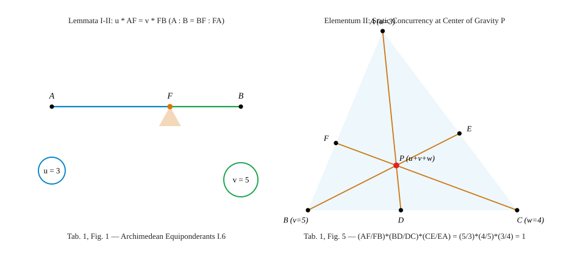

On Straight Lines Mutually Intersecting¶
De Lineis Rectis Se Invicem Secantibus Statica Constructio — Giovanni Ceva (Milan, 1678)
ita-bnc-mag-00001346-001).Table of Contents¶

The preliminary leaves of Giovanni Ceva's De Lineis Rectis Se Invicem Secantibus Statica Constructio (Milan: Ludovico Monza, 1678, folios 0001–0017) frame the entire treatise: the BNCF Florence Magliabechiano binding and title page dedicated to Duke Ferdinando Carlo Gonzaga, the dedicatory epistle signed by Ceva, and the Prooemium narrating how the substitution of Archimedean weights for straight lines (substitutisque linearum vice ponderibus) gave birth to his static construction.

Liber Primus (printed pp. 1–34, folios 0018–0051, Tabulae I–III, Figs. 1–31) constructs the complete static geometry of intersecting lines from two Axioms, one Postulate, five Lemmas, and 26 Propositions. Beginning with Archimedes's Law of the Lever (Axioms & Lemmas I–II), Ceva establishes his five planar Elementa—encompassing Menelaus's sector (Prop. I), Ceva’s interior concurrency theorem (Prop. II), analytic negative weights F - A (Prop. III), the addition sign ✠ (Prop. IV), and the 3D skew-quadrilateral corollary (Prop. V). After recording pure Euclidean parallel-line proofs from Pietro Paolo Caravaggio Jr. (Props. VI & X) and exhausting all combinatorial ratio cases (Props. VI–XXI), Book I ascends into three dimensions to prove seven-line concurrency in a tetrahedron (Prop. XXIII) and concurrency in quadrangular pyramids, frusta, and bipyramids (Props. XXIV–XXVI).

Liber Secundus (printed pp. 35–60, folios 0052–0077, Tabulae IV–VIII & X, Figs. 32–67 & 85) extends static construction from linear polygons to conic sections, triangle geometry, and practical instrumentation across six Lemmas and 21 Propositions. Opening with oblique cylindrical projection (Lemmas I–III, citing Borelli, Serenus, and Apollonius), Ceva proves inscribed-conic concurrency (generalized Gergonne point \(X(7)\)) and deduces the explicit Converse of Ceva’s Theorem (Prop. I Corollary, p. 38). He goes on to construct ellipses inscribed in triangles (Prop. IX), prove Brianchon-type concurrency and a cubic area law for three tangents to a parabola (Props. X–XII), establish the concurrency of triangle angle bisectors at the Incenter (Prop. XVI, Tab. 7, Fig. 57), solve 15 cases of reciprocally inscribed triangles (Prop. XIX), and conclude FINIS CONSTRUCTIONIS STATICAE with his single-station optical rangefinder (Prop. XXI Scholium, Tab. 10, Fig. 85).

The Appendix Geometrica (printed pp. 61–83, folios 0078–0100, followed by the Imprimatur & Monza Colophon 0101–0102 and all ten folding copperplates 0103–0126) collects 16 standalone theorems born from Ceva’s youthful circle-quadrature investigations alongside a celebrated closing critique of Cavalieri's indivisibles:
Ceva (1678) — Giovanni Ceva, De lineis rectis se invicem secantibus statica constructio. Ad Serenissimum Ferdinandum Carolum Ducem Mantuæ, Montisferrati, Guastallæ, &c., Mediolani: Ex Typographia Ludovici Montiae, 1678 ([16], 104 pp., 10 folding copperplates containing Figs. 1–85; Biblioteca Nazionale Centrale di Firenze exemplar ita-bnc-mag-00001346-001). (Editio princeps; Public Domain.)
Bidirectional concordance mapping every landmark proposition in Giovanni Ceva's De lineis rectis se invicem secantibus statica constructio (Milan, 1678, verified against BNCF Florence scans 0001–0126) to atomic Book Codex leaves, sister GEOMETOR repositories, and exact symbolic verifiers in geometor.ceva.
Lexicon of the 16 foundational Neo-Latin, typographic, projective, and symbolic-geometry terms across De lineis rectis se invicem secantibus statica constructio (1678) and geometor.ceva.